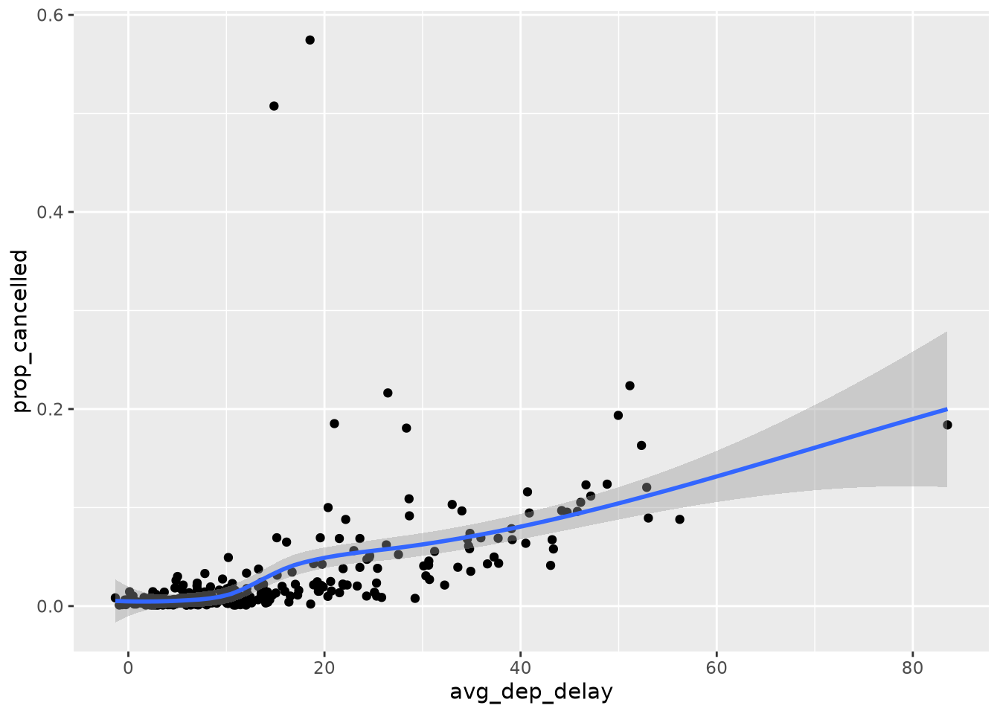

# Loading Packages
library(tidyverse)
library(nycflights13)
library(palmerpenguins)Logical Vectors
Exercise Solutions
12.2 Comparisons
Question 1
NoteNote
The Problem
How does dplyr::near() work? Type near to see the source code. Is sqrt(2)^2 near 2?
The Solution
function (x, y, tol = .Machine$double.eps^0.5)
{
abs(x - y) < tol
}
<bytecode: 0x256cd800>
<environment: namespace:dplyr>near functions by checking if the absolute difference between the two values is less than a tolerance, where the default is .Machine$double.eps^0.5 = 1.4901161^{-8},
sqrt(2)^2 is near 2.
Question 2
NoteNote
The Problem
Use mutate(), is.na(), and count() together to describe how the missing values in dep_time, sched_dep_time, and dep_delay are connected
The Solution
# A tibble: 2 × 4
miss_dep_time miss_sched_dep miss_dep_delay n
<lgl> <lgl> <lgl> <int>
1 FALSE FALSE FALSE 328521
2 TRUE FALSE TRUE 8255From the tibble of counts above, there are no missing values in the miss_sched_dep column. Every row that has missing value in the dep_time column also has a missing value in dep_delay and vice versa.
12.3 Boolean Algebra
Question 1
NoteNote
The Problem
Find all flights where arr_delay is missing but dep_delay is not. Find all flights where neither arr_time nor sched_arr_time are missing, but arr_delay is.
The Solution
Note the statement A nor B is equivalent to (not A) and (not B).
There are 1175 flights that follow the first statement and 717 flights that follow the second statement.
Question 2
NoteNote
The Problem
How many flights have a missing dep_time? What other variables are missing in these rows? What might these rows represent?
The Solution
There are 8255 flights that have a missing dep_time. The columns dep_delay and arr_time are are also missing in these rows. These rows could represent flights that did not depart, would mean the flights would not have a departure delay or an arrival time.
Question 3
NoteNote
The Problem
Assuming that a missing dep_time implies that a flights is cancelled, look at the number of cancelled flights per day. Is there a pattern? Is there a connection between the proportion of cancelled flights and the average delay of non-cancelled flights?
The Solution
# A tibble: 6 × 2
# Groups: date [6]
date n
<chr> <int>
1 2013-2-8 472
2 2013-2-9 393
3 2013-5-23 221
4 2013-12-10 204
5 2013-9-12 192
6 2013-3-6 180f5 <- flights |>
filter(!is.na(dep_time)) |>
mutate(date = paste(year, month, day, sep = "-")) |>
group_by(date) |>
summarize(
avg_dep_delay = mean(dep_delay),
# Get number of non-cancelled flights
num_flown_flights = sum(dep_delay == dep_delay)
)
left_join(f4,f5) |>
mutate(prop_cancelled = n / (n + num_flown_flights)) |>
ggplot(aes(x = avg_dep_delay, y = prop_cancelled)) +
geom_point() +
geom_smooth()Joining with `by = join_by(date)`
`geom_smooth()` using method = 'loess' and formula = 'y ~ x'
There are a high number of flights cancelled during dates that are typical for severe weather conditions (heavy snow and rain). From the plot above there seems to be a positive relationship between the average departure delay and the proportion of cancelled flights.
12.4 Summaries
Question 1
NoteNote
The Problem
What will sum(is.na(x)) tell you? How about mean(is.na(x))?
The Solution
sum(is.na(x)) will tell you the total number of elements of x that are missing. mean(is.na(x)) will tell you the proportion of missing values in all elementsx.
Question 3
NoteNote
The Problem
What does prod() return when applied to a logical vector? What logical summary function is it equivalent to? What does min() return when applied to a logical vector? What logical summary function is it equivalent to? Read the documentation and perform a few experiments.
The Solution
When given a logical vector, prod() and min() handles TRUE as if it were 1 and FALSE as if it were 1. This causes both to be equivalent to the function all(), since both will only equal 1 (ie TRUE) if all elements in the vector are TRUE, 0 (ie FALSE) otherwise.
12.5 Conditional Transformations
Question 1
NoteNote
The Problem
A number is even if it’s divisible by two, which in R you can find out with x %% 2 == 0. Use this fact and if_else() to determine whether each number between 0 and 20 is even or odd.
The Solution
Question 2
NoteNote
The Problem
Given a vector of days like “x <- c(”Monday”, “Saturday”, “Wednesday”)“, use an if_else() statement to label them as weekends or weekdays.
The Solution
Assume all days are capitalized.
Question 3
Question 4
NoteNote
The Problem
When a case_when() statement that uses the month and day columns from flights to label a selection of important US holidays (e.g., New Years Day, 4th of July, Thanksgiving, and Christmas). First create a logical column that is either TRUE or FALSE, and then create a character column that either gives the name of the holiday or is NA.
The Solution
flights |>
mutate(
is_holiday = case_when(
month == 1 & day == 1 ~ TRUE, # New Years Day
month == 7 & day == 4 ~ TRUE, # 4th of July
month == 12 & day == 25 ~ TRUE, # Christmas Day
month == 11 & day == 26 ~ TRUE, # 2026 US Thanksgiving
.default = FALSE
),
holiday = case_when(
month == 1 & day == 1 ~ "New Years Day",
month == 7 & day == 4 ~ "4th of July",
month == 12 & day == 25 ~ "Christmas Day",
month == 11 & day == 26 ~ "2026 US Thanksgiving",
.default = NA
),
) |>
relocate(is_holiday, holiday) |>
group_by(holiday) |>
count()# A tibble: 5 × 2
# Groups: holiday [5]
holiday n
<chr> <int>
1 2026 US Thanksgiving 989
2 4th of July 737
3 Christmas Day 719
4 New Years Day 842
5 <NA> 333489